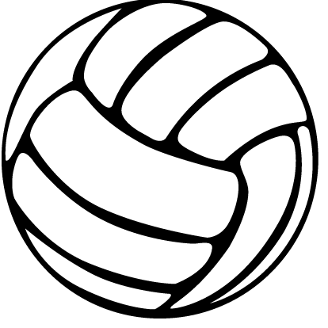

Trottier's Annual
Volleyball Marathon!

ABOUT THE FUNDRAISER
The volleyball marathon is Trottier's largest fundraiser. This fun, whole school event will run all day on Friday, April 5th. During the school hours, teachers bring their classes to the gym to play volleyball.
All students will have an opportunity to participate during the school day. The fun then continues after school with the option for students to Stay and Play from 2:30-6pm.
In order for students to stay after school, a minimum donation of $15 is required. (paid via their student's individual fundraising page - register now by clicking on the blue link) We are hoping, however, that each student can raise a minimum of $50 to make our fundraiser a great success.
There will be cash concessions offering students pizza ($2), drinks and snacks ($1) during the after school hours.
Trottier Middle School understands the need to promote a healthy and educational fundraiser to our students while respecting parents' repeated requests for an easy no-nonsense approach to helping us reach our budget goals. Please keep in mind that this is Trottier's most significant fundraiser and the money raised will support the students and teachers directly (see pie chart below). So please consider donating in order to support your student's educational experience.
*Please use student's "yellow block" class teacher when registering*
(School identifier - 62274c83b453c)
Any questions, email trottiervolleyballmarathon@gmail.com
PARENT REGISTRATION INSTRUCTIONS
1 Register for the
fundraiser or
login to your parent dashboard here
2 On the parent dashboard,
make sure your child has been successfully added to our fundraising
event
3 Share, easily send at
least 10 text messages and/or E-mails, plus post on social media
T.E.A.M = Together, Everyone, Achieves, More!
Easy Scan Registration
WHERE DONATION FUNDS ARE GOING
30% Teacher Focused -
Appreciation and Developement
30% Student Focused -
Scholarship
25% Student Focused -
Events
15% Student Focused - Field
Trips
DONATION REWARDS & INCENTIVES
Individual Students
Candy (M&M’s or Skittles) - when a student registers and shares their webpage
Raffle Entry - a weekly drawing for a prize will be held for those students who have reached the individual fundraising goal of $50 or more per grade. Prize valued at $75 or more.
Classroom
Class Breakfast - The classroom in each grade level with the highest percentage based donations (allowing for equality with different class sizes) will receive a classroom breakfast. Trottier will use their “yellow block” class for this purpose.
School Wide
Raffle Entry for Grand Prize - every student who reached the individual fundraising goal of $50 or more will be entered into the grand prize raffle for a Shopaholic Spectacular at the Natick Mall, valued at $300.
If the school reaches the fundraising goal of $15,000 - TBD